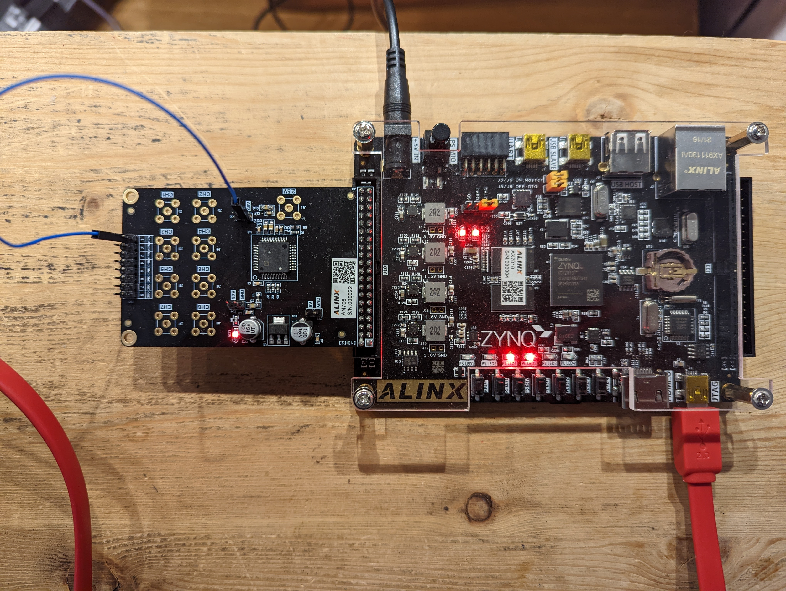
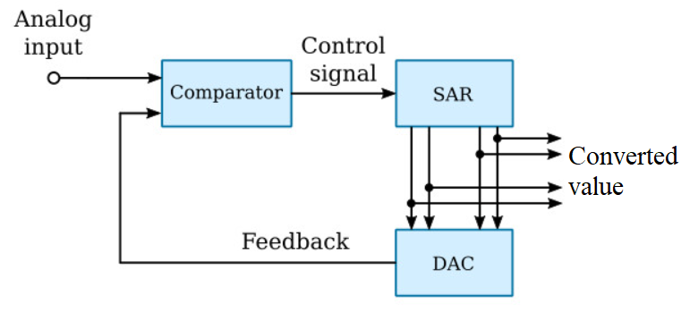
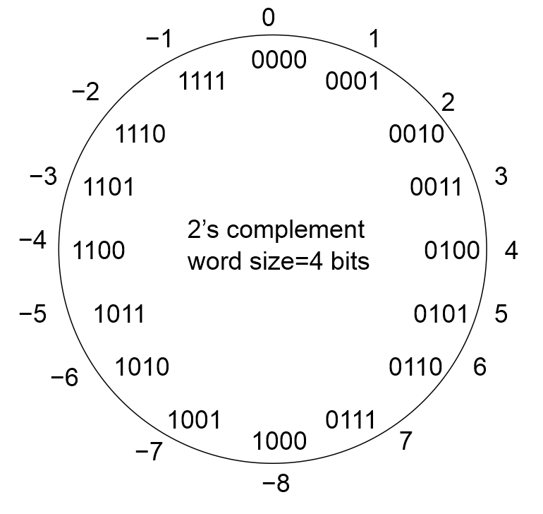
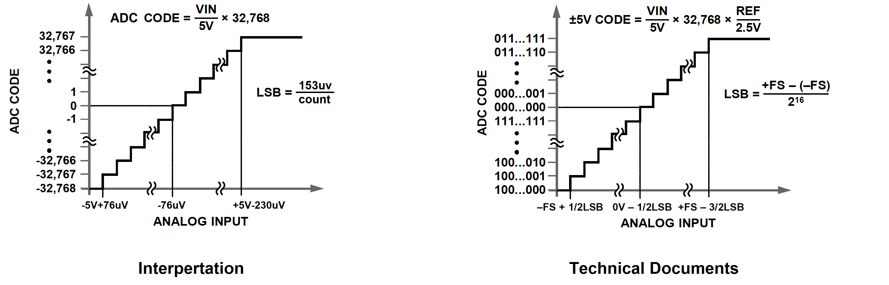
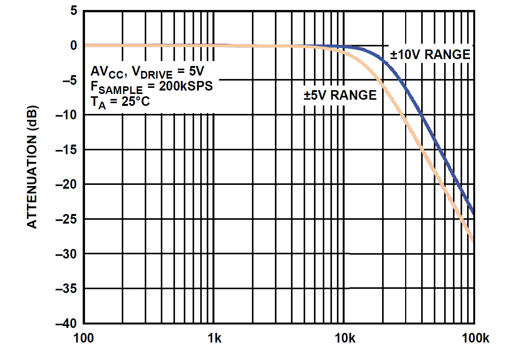

| Lecture | 20 |
| Class Objectives | To understand the I/O behavior of the AD7606 8-channel ADC.
|
AN706 Development board
In order to build an oscilloscope, we need the ability to take in a analog signal,
convert it into binary, and then send it to the Zynq 7010. Fortunately, ALINX makes
a daughter board, the AN706, that serves this role. The AN706 is a daughter board
that connects to header J10 of the ALINX board and contains an Analog Devices
AD7606 ADC.

Your next lab will require you to build a datapath and control unit to interface
to the AD7606 chip to extract digitized values from the analog inputs on the AN706
daughter board.
AD7606 ADC
The AD7606 is an 8-channel 16-bit ADC manufactured by Analog Devices. 8-channels means the
chip has 8 analog inputs. 16-bits means that these analog values are converted into 16-bit
values. The AD7606 can convert up to 200k analog inputs into digital values per second.
The analog inputs are limited to +5V to -5V.
The AD7606 converts analog values into digital using a successive
approximation register (SAR) approach. The SAR in the AD7606 is
a 16-bit register that progressively get's closer and closer to the
converted value in a series of 16 steps. At each step, the SAR compares
the current, converted value to the analog input. If the converted
value is less than the analog input, it sets the next bit of the SAR
else it leaves the bit at 0. This continues until all 16 bits are
found.

In order to have a full understanding of this chip we will explore:
- Review 2's complement
- AD7606 Transfer function
- Antialias filter
- Digital filter
- Bandgap reference
2's Complement
The binary numbering systems is often called an {\it unsigned}
numbering representation. The term unsigned arises from the
fact that there is no need to write a sign symbol in front of
a binary number because all binary numbers are positive --
the positive sign is implicit. A {\it signed} numbering representation,
2's complement, is capable of representing both positive and
negative numbers.
Like binary numbering, 2's-complement numbers exist within the
confines of a word size. One way to determine the 2's-complement
representation of a decimal number x, is to write
down the binary representation for the quantity 2
N+x using
N bits, where N is the word size. For example, assuming a
word size of four bits, determine the 2's-complement representation
for 6. To do this, compute
2
N + x = 2
4 + 6 = 16+6=22 = 10110
2.
Taking the least significant four bits yields 0110.
There are two
points to note. First, this representation is the same as in
binary numbering. Second, the 2's-complement value is written
without a subscript 2, because it is not a binary number. Now
consider the 2's-complement representation of a negative number.
Assuming a word size of four bits, determine the 2's-complement
representation for -6. Compute
2
N + x = 2
4 - 6 = 16-6 = 10 = 01010
2.
Taking the least significant four bits yields 1010.
To determine the decimal value of a 2's-complement number,
inspect its MSB. If the MSB is 0, then the number is
positive, hence can be interpreted as a binary number.
If the MSB is 1, then 2
N+x must be solved for x.
There is, however an easier way to approach this problem.
Negating a 2's-complement number will mean changing
the sign of the underlying decimal representation. The
negation of a 2's-complement number, x, can be formed
by flipping all the bits of x and then adding 1. For
example, take the complement of the 4-bit 2's-complement
number x=0110 which equals 6. Flipping all
the bits of x yields 1001. Adding 1 to this yields
1010, which was previously shown to equal -6.
This technique aids in interpreting negative 2's-complement
numbers as follows. Given a 2's-complement number that is
negative, form its
negation, convert that to decimal, then stick a negative
sign in front of the decimal representation. For example,
determine the decimal representation for the 4-bit 2's-complement
quantity 1010. Since the MSB is 1, this
2's-complement number represents a negative quantity.
Flipping the bits, 0101, then adding 1, results in 0110.
This is the representation for 6, so the original 2's-complement
number 1010 represent -6.
The image below shows every combination of four bits
and their associated 2's-complement representation.

Clearly, half of the numbers in this image have
a leading 0 as their MSB, and are positive; 0 is considered
a positive number. The other half of the numbers have their
MSB equal to 1 and are negative. Since 0 is considered a
positive number, the largest negative number is 1 larger
than the largest positive number. Given a word size of N
bits the range of 2's-complement numbers is
[-2
N-1, 2
N-1-1].
Transfer Function
The AD7606 converts an analog input between -5V to +5V into
a 16-bit 2's complement number. The reason for the choice
of 2's complement for the output is to capture the relationship
between the sign of the input voltage and the sign of the
output value. The range of valid analog inputs is called the
full scale range, the largest positive voltage denoted +FS and
the largest negative voltage denoted -FS.
The ADC resolution captures the quantitative relationship between
the analog input and the converted value. In our case, the
analog input has a range of 10V (-5V to +5V) and the converted
value has a range of 2
16 counts. This means that
every incremental change of the output (called a count) is
equal to 10V/2
16counts = 153uV/count, the converter
resolution. A high converter resolution is not necessarily a good
thing. For example, noise may limit the number of usable bits
of the converter. Or, if you have limited memory, having more
bits to store will decrease the number of samples that you can
store.
The transfer function of the AD7606, shown in the graph below,
describes the relationship between the analog input value and
the 2's complement output in extreme detail.

The technical document version of the transfer function is shown
at right. In order to make more sense of this figure, I substituted
+FS=+5V and -FS=-5V, converted the 2's complement values into decimal,
and replaced the converter resolution, "LSB" into a voltage value.
This level of detail is usually not needed and all you need to understand
is how an analog value is converted into digital. So let's work
through a few examples.
Given: An input voltage of -2V
Find: The 16-bit 2's complement converted value.
-2V
ADC Code = ---- * 32,768 counts = -13,107 counts
5V
2's Complement 31,107 = 0x7983 = 0111 1001 1000 0011
so -31,107 = 1000 0110 0111 1100 + 1
1000 0110 0111 1101 = 0x867D
For our second example, we will find the input analog
value that corresponds to a converted value.
Given: A 16-bit 2's complement converted value of 0xABCD
Find: The input voltage
2's Complement 0xABCD = 1010 1011 1100 1101
Since MSB = 1 this is a negative number
Positive version = 0101 0100 0011 0011 = 0x5433 = 21,555
So 0xABCD = -21,554
X
ADC Code = -21,555 counts = 32,768 * ---- X = 3.3V
5V
Antialias Filter
You may remember from EEN383 that high frequency content, well above
the sampling frequency, will appear as low frequency content in the
sampled signals. This phenomena is called aliasing. Aliasing is a
fundamental phenomena of the universe and something that we cannot
make go away. The solution used in most ADC is to incorporate a low
pass filter in front of the ADC to attenuate the

You might want to break out your EENG 383 material and see how this
compares to the theoretical model that we created in class. Here
are the relevant parameters:
- Signal of interest: 0 to 15kHz
- Filter order: 2nd for -40dB/decade
- 16-bit ADC: Noise floor of -102dB
- Sampling rate: 200kHz
What I found out was that the filter is only effective down to -44dB
at 200kHz which is pretty far away from the -102dB noise floor. As
a result, this antialias filter can allow a lot of high frequency content
into the samples. However, I think that the vendor did not want to
overly constrain the user and, if needed, the user can perform digital
filtering to eliminate unwanted noise.
Digital Filter
One simple way to eliminate noise in a signal is to take several samples
of the signal and average them together. The number of samples used to
form the average is called the oversampling rate.
| OS[2:0] | OS Ratio | 3dB corner | Max conversion per second
|
| 000 | 0 | 15kHz | 200ksps
|
| 001 | 2 | 15kHz | 100ksps
|
| 010 | 4 | 13.7kHz | 50ksps
|
| 011 | 8 | 10.3kHz | 25ksps
|
| 100 | 16 | 6kHz | 12.5ksps
|
| 101 | 32 | 3kHz | 6.25ksps
|
| 110 | 64 | 1.5kHz | 3.125ksps
|
| 111 | Invalid | Invalid | Invalid
|
Bandgap Reference
The AD7606 contain an on-chip 2.5 V band gap reference. A bandgap reference
is an analog circuit that produces a temperature stable voltage.